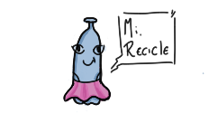

Posts Recentes

Por que criamos essa página?
Autoral 14 de fevereiro de 2024A página IFPE JBG tem como objetivo divulgar informações relacionadas à sustentabilidade no campus em questão e, também, do IFPE de modo geral.
leia mais
="im